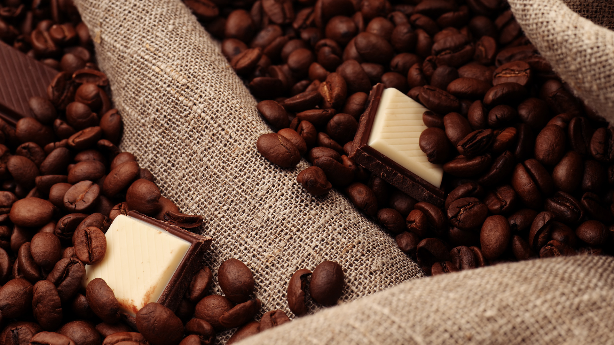

Плотность и кислотность
Кофе обладает двумя ключевыми характеристиками вкуса — это плотность и кислотность. Чаще всего кофе выбирают именно по ним.
Плотность — это то же самое, что насыщенность. Её степень нужно определить для себя самостоятельно в зависимости от того, насколько насыщенный кофе вы любите.
Кислотность — это одна из важнейших характеристик кофе, но не все к ней готовы. Если вы только знакомитесь со спешелти кофе, мы рекомендуем заказать кофе с разной степенью кислотности: низкой, средней и высокой, и выбрать для себя тот уровень кислотности в кофе, который вам больше всего понравится.
